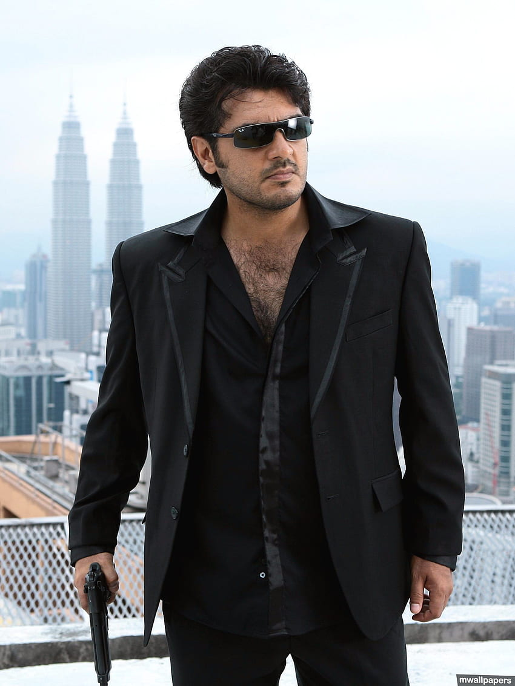

Favourite Actor

Ajith Kumar (born 1 May 1971) is an Indian actor who works predominantly in Tamil cinema. To date, he has starred in over 61 films, and his awards include four Vijay Awards, three Cinema Express Awards, three Filmfare Awards South and three Tamil Nadu State Film Awards. In addition to his acting career, Ajith is also a sports car racer and participated in the MRF Racing series (2010). He became a race car driver, competing in circuits around India in places such as Mumbai, Chennai and Delhi. He is one among very few Indians to race in the International arena and in Formula championships.
ABOUT AJITH
WHY I AM A FAN OF HIM
- SOCIAL ACTIVIST
- BEST ACTOR
- GOOD HUMAN
FAVOURITE MOVIES
- VALLI
- MANKATHA
- BILLA